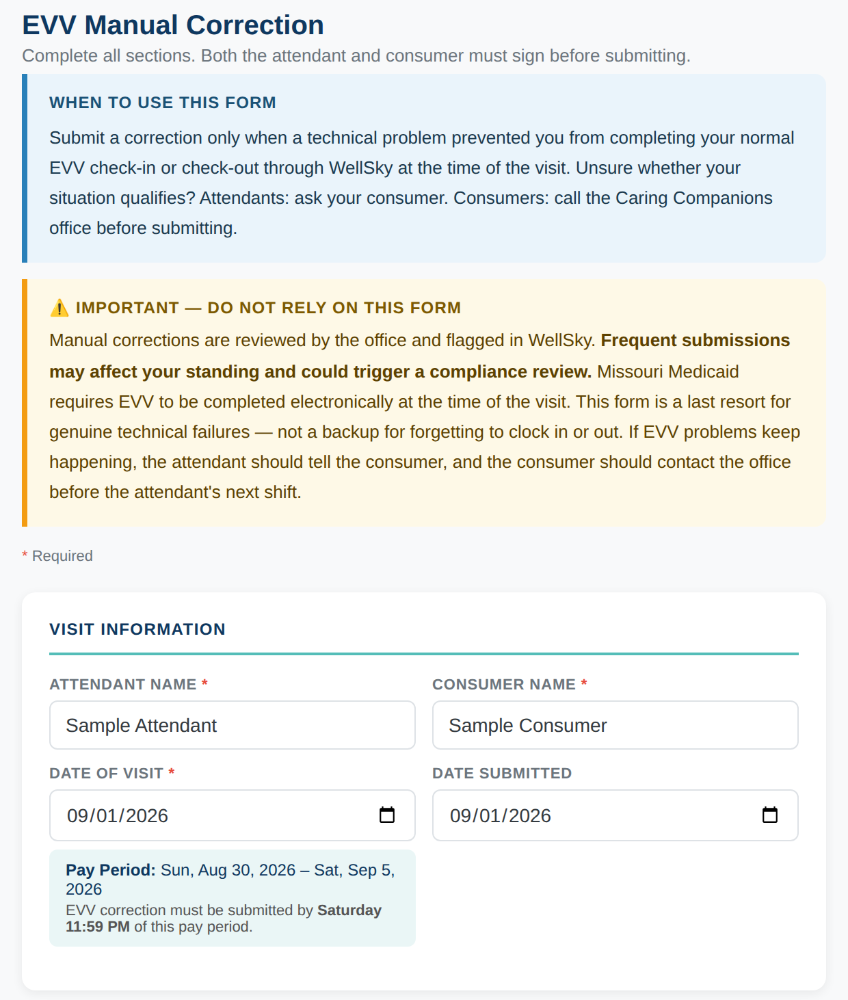
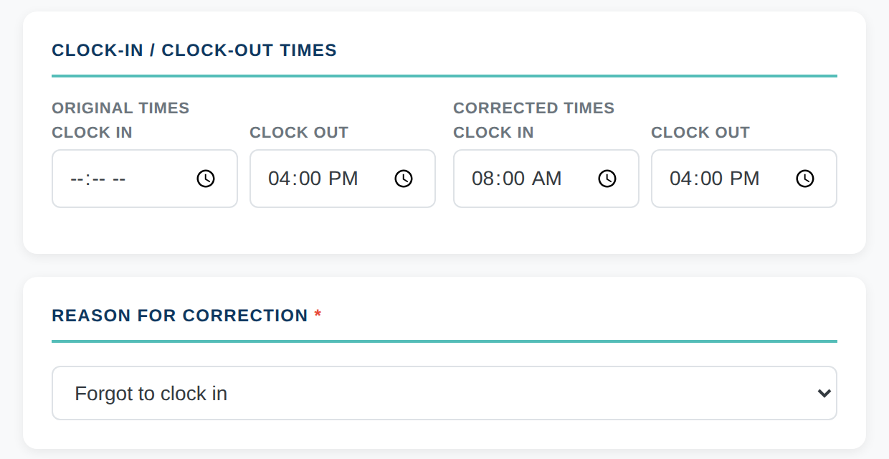
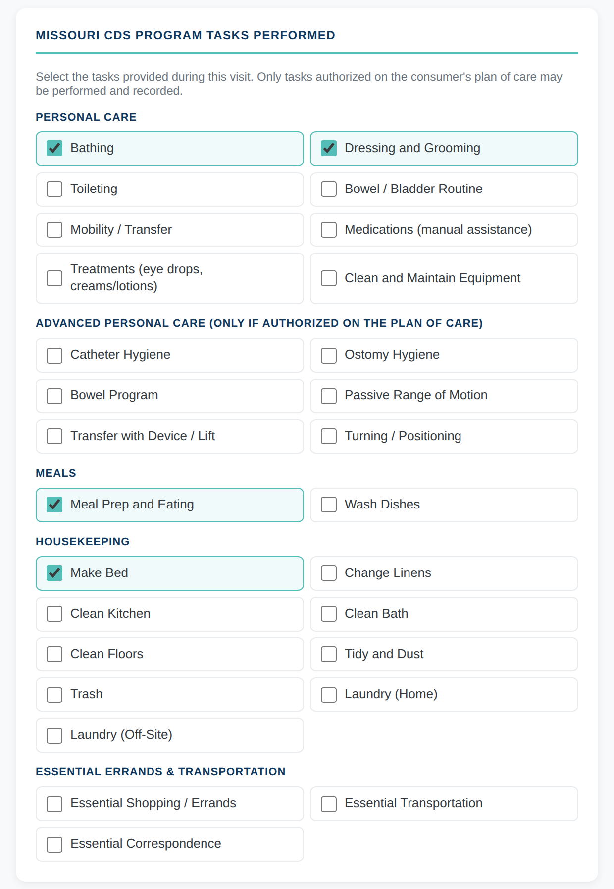
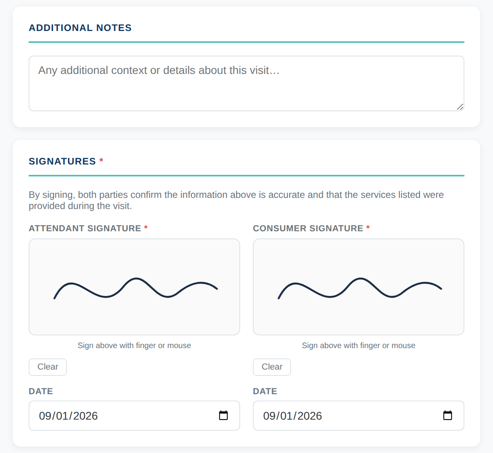

You are about to be paid to care for someone in their own home through Missouri's Consumer Directed Services program. This orientation covers who you work for, what you may and may not do, how to record your time so you get paid, and where the serious lines are.
8 short modules
Watch or read, whichever you prefer. Your place is saved.
About 60 minutes
Stop any time and come back where you left off.
Ends with a check
12 questions, then an acknowledgment you sign.
Questions at any point? Call Caring Companions at {{ phone }}.
12 questions, then a short acknowledgment you sign with your name and the date.
{{ finalLockMsg }}
{{ vidEyebrow }}
{{ vidTitle }}
{{ sceneKicker }}
{{ sceneTitle }}
{{ l.t }}
{{ artCenter }}
{{ d.t }}
{{ artBig }}{{ artSmall }}
{{ artCaption }}
Approved limit
{{ artCaption }}
{{ artBig }}
{{ artCaption }}
{{ artBig }}
{{ artCaption }}
{{ artBig }}{{ artSmall }}{{ artCaption }}
{{ r.mark }}{{ r.t }}
{{ timeLabel }}{{ sceneCounter }}
Voiceover not found yet. Drop the recorded file at {{ audioSrc }} and it will play here automatically. The visuals are running on estimated timing for now.
{{ p.t }}
What CDS is
Consumer Directed Services is a Missouri Medicaid program that lets a person with a disability stay in their own home and hire their own caregiver instead of moving into a facility. That caregiver is you, and the job title is attendant.
The person you care for is called the consumer. Caring Companions is the vendor. We hold the agreement with the Department of Health and Senior Services, and we handle payroll, taxes, background screening, Medicaid billing and support.
Who you actually work for
Remember
You are the employee of your consumer, for the time paid by CDS funds. You are never an employee of Caring Companions, of the Department of Health and Senior Services, or of the state of Missouri.
That is not a technicality. It shapes the whole job. Your consumer hired you, trains you, sets your schedule, and directs your work. We pay you on their behalf and keep the program running correctly.
How this differs from an agency job
Traditional agency
The agency assigns your clients
A supervisor sets the schedule
Staff train you on a standard care plan
You may be sent to several homes
CDS
Your consumer chose and hired you
Your consumer sets the schedule
Your consumer trains you on their own routine
You work for the consumer who hired you
There is a real freedom in that. There is also a real limit, and it is the subject of the next module: the consumer directs the work, but nobody, including the consumer, can direct you outside the rules of the program.
Knowledge check
Whose employee are you?
Correct. You are the consumer's employee for the time paid by CDS funds, never the employee of the vendor, DHSS or the state.
{{ fb_m1 }}
The consumer directs their care
Your consumer decides how their care happens. Which tasks, in what order, in what way, at what time of day. They know their body, their home and their routine better than anyone else does, and part of your job is to learn their way of doing things rather than importing your own.
We are not sending you into the home to carry out a standardized agency care plan. Ask them how they like things done. Then do it that way.
What Caring Companions does
Screen you and keep your eligibility to work current
Collect your time, run payroll, and pay all payroll taxes
Bill Medicaid for the services provided
Monitor the program and answer questions from you or your consumer
Train and support consumers so they can direct your work well
The line that matters most
Stop
"The consumer told me to" does not make something allowable if it breaks CDS rules, Medicaid requirements, employment rules or the law.
Your consumer directs how the approved work is done. They cannot authorize unapproved tasks, unworked time, or anything illegal. If you do it anyway, you are the one holding the consequences, along with them.
When you are not sure: four steps
1Stop. Do not do the thing you are unsure about, and do not clock time for it.
2Ask. Ask your consumer what they need and why, kindly and without accusation.
3Document when it matters. Write down the date, the time, and what was said or happened.
4Contact Caring Companions at {{ phone }}. Asking first is always cheaper than fixing afterward.
What would you do?
Your consumer asks you to clock in while they go to the store alone, because they do not want to lose their authorized hours. What do you do?
Correct. Stop, ask, document, contact us. Recording time you did not work is Medicaid fraud, and being asked by the consumer is not a defense.
{{ fb_m2 }}
Who may work as an attendant
At least 18 years old
Able to meet the physical and mental demands of the tasks a particular consumer needs
Willing to keep the consumer's information confidential
Emotionally mature and dependable
Able to handle emergency situations
Not the consumer's spouse
Registered with the Family Care Safety Registry with a clear screening, or holding a Good Cause Waiver from DHSS that is still in good standing
Not listed on the Employee Disqualification List maintained by DHSS
Not on the federal List of Excluded Individuals and Entities maintained by the Office of Inspector General
Screening does not stop after you are hired
Caring Companions screens the registry and the disqualification list every quarter, and the federal exclusion list every month, for as long as you work in the program. Something that lands on any of those lists can end your eligibility to work, even mid assignment.
Call us
If your name, address, phone number or legal situation changes, tell us. Paperwork that is out of date can hold up your pay or your eligibility.
Before your first shift
No attendant may begin working or be paid until screening and employment paperwork are complete. If someone asks you to start early "just to help out," the answer is no. That time cannot be paid.
You will also choose how you want to be paid: direct deposit into a checking or savings account, or a Rapid Pay card.
Knowledge check
Your consumer wants you to start tomorrow, but your screening is not finished yet. What is true?
Correct. Screening and paperwork come first. Work done before that cannot be paid.
{{ fb_m3 }}
The plan of care is the whole list
Your consumer has a plan of care from their state assessment. It lists the tasks they are approved for, how often, and the maximum units of care per month. One unit is 15 minutes.
Only the tasks on that plan may be performed and recorded. Ask to see it, and ask your consumer to walk you through how they want each task done.
May and may not
You may
Do the tasks listed on the plan of care
Do them the way your consumer teaches you
Be actively working the whole time you are clocked in
Ask questions any time you are unsure
You may not
Do tasks that are not on the plan of care
Provide services to visitors, children, pets or anyone else in the household
Do medication tasks that are not authorized
Sit idle or run personal errands while clocked in
Stop
You provide services only to the consumer named on the plan of care. Not their spouse, not their adult children, not their grandchildren, not their pets. This is one of the most common ways good attendants get into trouble.
Supplies are not yours to buy
You are not responsible for providing cleaning supplies, gloves or other protective gear, gasoline, or a vehicle. Those are the consumer's responsibility. If what you need is not there, tell your consumer, and tell us if it does not get resolved.
Hours have a hard ceiling
The state approves a set number of units each month and how much time each task gets. Caring Companions can only bill Medicaid, and therefore only pay you, for what was approved.
Remember
If you work more than the approved hours, the units run out before the end of the month, and hours worked past the limit will not be paid. Your consumer is responsible for tracking this, but protect yourself: know the schedule you agreed to and speak up if you are being asked to work beyond it.
What would you do?
While you are clocked in, your consumer's daughter asks you to run her laundry too, since the machine is already going. What do you do?
Correct. Services go to the consumer named on the plan of care, and only to them. Saying no politely protects you both.
{{ fb_m4 }}
Showing up is most of the job
Your consumer planned their day around you. When you do not come, they may not eat, bathe or get out of bed. Be on time, every shift, and treat the schedule as a promise.
Do
Arrive at the agreed time
Call your consumer as early as you possibly can if you cannot come
Agree in advance how much notice they need
Tell them when you will be away for vacation or appointments
Do not
No show, or text a few minutes before a shift
Leave early without saying so
Bring friends, family or children to work
Assume someone else will cover for you
Dignity and boundaries
You are in someone's home, helping with the most private parts of their life. Knock. Ask before moving their things. Cover them during personal care. Talk to them, not about them, and never in a demeaning way, even as a joke. Referring to a person in their presence with profanity or in a degrading way can be reported as emotional abuse.
Keep the relationship professional. Do not borrow money, do not lend money, do not accept gifts of value, do not use their car for personal errands, and do not bring your own household tasks into their home.
Confidentiality
You agreed to keep your consumer's information confidential, and that is a condition of working in the program. Health information is protected by federal law. In practice this means:
Do not discuss your consumer's health, finances or household with friends or family
Never post about them, or photograph them or their home, on social media
Do not share their address, phone number or documents with anyone
Speak about their care only with them, their chosen representative, and Caring Companions
Call us
Because of privacy rules, we cannot discuss your payroll by email. Call us at {{ phone }} for anything about your pay.
Knowledge check
Which of these is allowed?
Correct. We are one of the few places you may discuss your consumer's care. Call us any time you are unsure.
{{ fb_m5 }}
Two ways to clock in. Only two.
Option 1
The WellSky Personal Care app
You need a smartphone that can download the app. Clock in when you start and out when you finish, every shift.
Option 2
The consumer's home phone
Call the time tracking line from the consumer's home telephone, the number registered to their residence.
Stop
Calling to clock in from your own cell phone does not work and is not allowed. It is the app, or the consumer's home phone. Nothing else.
Caring Companions does not use paper timesheets at all. There is no paper slip to fall back on.
Your clock in habits
Clock in before you start any authorized work, not after
Clock out immediately when the work is finished, not later from the car
Report the tasks you actually completed
Check your recorded times daily so a problem is caught the same day
Keep your own simple record of hours worked, in case an electronic record is missing
Be actively providing care the entire time you are clocked in
When something genuinely goes wrong
The EVV Manual Correction Form
Dead phone, no signal, an app crash, a genuinely forgotten punch: fill in the form online at hub.caringcds.com/evv-form.html. Fill it out together with your consumer, and submit it by 11:59 PM Saturday of that pay period.
Save the form to your phone's home screen so it is one tap when you need it.
How to fill out the correction form, step by step
Step 1 — Names and dates
Read the two notice boxes at the top first: this form is only for genuine technical failures. Then enter your full name, your consumer's full name, and the date of the visit being corrected. When you pick the visit date, the form shows the pay period and the exact Saturday 11:59 PM deadline for that visit. Date Submitted is today's date.

Step 2 — Times and reason
Under Original Times, enter what WellSky actually recorded, and leave a box empty if a punch never happened at all. Under Corrected Times, enter the real times you started and finished work. In the example below, the clock in was missed, so the original clock in is blank and the corrected times show the true 8:00 AM to 4:00 PM shift. Then choose the reason that honestly matches what happened. Never round times or make them up: the corrected times must be the times you actually worked.

Step 3 — Tasks performed
Check only the tasks you actually performed during this visit, and only tasks that are on your consumer's plan of care. This is the same rule as every shift: the plan of care is the whole list.

Step 4 — Sign together and submit
Add a note if there is anything the office should know. Then both of you sign with a finger or mouse, each on your own line, and each of you dates your signature. Your consumer's signature confirms the services really were provided, so complete this form together, not from home afterward. Tap Submit and you will see a confirmation screen. The office processes the correction in WellSky; nothing more is needed from either of you.

Remember
The goal is that 95 percent or more of visits are clocked correctly the first time, with no manual correction. Missouri Medicaid treats a high rate of manual corrections as a possible fraud indicator, and every correction is reviewed individually in an audit.
Frequent corrections can affect your standing and may trigger a compliance review. If you are submitting them most weeks, tell your consumer so they can call us, and we will work out what is going wrong.
Questions about pay, or anything else?
Your consumer is your employer, not Caring Companions. If you have a question about your pay, your hours, this form, or anything else about the job, tell your consumer. Your consumer then contacts Caring Companions and gets the answer.
Please do not call or message the office directly. The chain is always the same: you talk to your consumer, and your consumer talks to us.
What would you do?
You arrive at 8:00 AM and realize at 9:15 that you never clocked in. What do you do?
Correct. The correction form exists for exactly this. Use it, submit it on time, and keep it rare.
{{ fb_m6 }}
What Medicaid fraud is in this job
Every hour you work is billed to Medicaid. If time or tasks are submitted that are not accurate, that is Medicaid fraud, and it does not require bad intentions to count.
Falsification examples from our policy include:
Time submitted for days you did not work
More hours than you actually worked
Tasks marked that you did not complete
Time recorded before the work happened, or for a day that has not occurred
Time for tasks not approved on the plan of care, such as yard work, pet care or home repair
Time for days the consumer was in the hospital, at an appointment, in rehab or in a facility
Time for days you were in the hospital, in rehab, in jail or otherwise unavailable
Time while you were working for another consumer, agency or employer
Work performed by someone other than you, submitted under your name
Signatures or initials that are not genuinely yours or your consumer's
Stop
Never let anyone else provide services under your name or your login. Never clock in for someone else, and never let another person clock in for you.
Two specific allegations apply to CDS attendants: misappropriation, which is diverting a consumer's property or money, including borrowing with a promise to repay, and falsification of documentation, which is falsifying your time.
What happens
Caring Companions is required to report suspected Medicaid fraud to the Missouri Medicaid Audit and Compliance Unit, to DHSS, and to the Missouri Attorney General. We can stop or suspend payments, disqualify you from working for any of our consumers, and withdraw as the consumer's vendor.
According to the Missouri Attorney General, falsifying timesheets or signatures in connection with personal care services is Medicaid fraud. People who violate these rules may lose Medicaid eligibility for life, face criminal charges, financial penalties, and prison time. Money paid on inaccurate time is recovered from the attendant and the consumer.
If you are overpaid
Overpayments happen, and they get corrected. You may repay by personal check, or authorize a reduction in your pay. Your pay is never reduced without your written authorization or proof that you were given due process first, and repayment normally has to happen inside the same tax year.
If you dispute an overpayment, say so. You will receive written notice and an opportunity to show that no overpayment occurred.
Knowledge check
You are sick, and your sister offers to cover your shift and let you record the time. What is true?
Correct. Work submitted under your name that someone else performed is listed in our policy as falsification. Call your consumer so they can use their backup attendant.
{{ fb_m7 }}
You are a mandated reporter
Every attendant providing CDS is a mandated reporter. State law requires you to report suspicions or allegations of abuse, neglect or exploitation immediately to the DHSS Central Registry Unit.
Report immediately
800-392-0210
DHSS Central Registry Unit. You do not have to witness it yourself. Information from someone else that suggests abuse, neglect or exploitation must also be reported.
What you are reporting
Abuse
Physical, sexual or emotional injury or harm. Physical includes beating, striking, choking or restraining. Emotional includes verbal abuse, or withholding affection to cause distress, including speaking to a person with profanity or in a demeaning way in their presence.
Neglect
Failure to provide the care, goods or services a person needs and cannot obtain themselves. It can be passive, from carelessness or not knowing, or active, from an intentional failure to provide care.
Exploitation
Taking control of someone's property or money by deception, intimidation or force. Includes misuse of a power of attorney, fraud, theft, stealing by deceit, or undue influence over wills and documents.
Reporting is not disloyalty, and it is not optional. If you are unsure whether something rises to the level of a report, call the hotline anyway and let them decide.
Emergencies and changes in condition
In a medical emergency, call 911 first, then your consumer's emergency contact, then us
Tell us and your consumer about a fall, an injury, or a sudden change in their condition
Tell us if your consumer is hospitalized or admitted to a facility. No time may be recorded for those days
Tell us if the home becomes unsafe for you, or if you are threatened or abused
Tell us if you can no longer meet the physical demands of the tasks
When to call Caring Companions
You are asked to do something not on the plan of care
You are asked to record time you did not work
The app or the phone line is failing repeatedly
Your pay looks wrong, or has not arrived
Your name, address or phone number changes
You are unsure about anything at all
Call us
{{ phone }}. If you have a concern about how you have been treated, tell us and we will work it through with you. Raising a concern in good faith is part of doing this job well.
What would you do?
Your consumer's nephew mentions that he has been taking money from her account without asking. You did not see it happen. What do you do?
Correct. Mandated reporters do not have to witness anything. Information from a secondary source that suggests exploitation must be reported immediately.
{{ fb_m8 }}
Final knowledge check
Twelve questions
Answer each one. If you miss it, you will see why, and you can pick again.
Answered correctly: {{ score }} of 12
Question {{ q.num }}
{{ q.q }}
{{ q.ok }}
{{ q.fb }}
{{ ackLockMsg }}
Almost done
Orientation acknowledgment
Please check each statement, then type your name and today's date.
Typing your name here records your acknowledgment of this orientation. A Caring Companions staff witness signature is collected separately.
{{ finishLockMsg }}
✓
You are finished
Attendant CDS Orientation complete
Name{{ name }}
Date{{ date }}
Modules completed{{ doneCount }} of 8
Final check score{{ score }} of 12
Time spent{{ elapsed }}
Print this for your records. Questions about anything you learned? Call us at {{ phone }}.